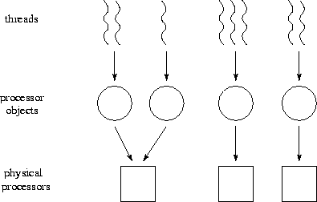

![[DBPP]](pictures//asm_color_tiny.gif)


![[Search]](pictures//search_motif.gif)
A parallel program defined in terms of CC++ constructs can be executed on both uniprocessor and multiprocessor computers. In the latter case, a complete program must also specify how the processor objects created by a CC++ program are mapped to processors. Recall from Chapter 2 that this is an important part of parallel algorithm design.

Figure 5.6: Mapping in CC++
. First, threads are mapped to processor
objects. Then, processor objects are mapped to physical
processors.
Mapping in CC++ is a two-stage process (Figure 5.6). First, threads are mapped to processor objects, and then processor objects are mapped to processors. The mapping of threads to processor objects can be one-to-one, in which case it is the mapping of processor objects to physical processors that is important. Alternatively, the mapping of processor objects to physical processors may be one-to-one, in which case it is the mapping of threads to processor objects that is important. If both mappings are one-to-one, then the mapping problem is straightforward.
An important aspect of the second mapping stage, processor object placement, is that it influences performance but not correctness. Hence, we can develop a program on a uniprocessor and then tune performance on a parallel computer by changing placement decisions. This is consistent with the design methodology of Chapter 2, in which mapping is the fourth and final stage of the design process. The first mapping stage, thread placement, has this property only if threads do not share data structures.
By default, a newly created processor object is placed on the same processor as its creator. An alternative placement can be specified by using the placement argument to the new operator. In C++ , this argument is used to position an object in memory space; in CC++ , it can also be used to position a processor object in processor space. (It can also be used to specify where in a file system to find the code for a processor object; however, we do not discuss this facility here.) The location is specified by an implementation-dependent class named proc_t. The constructor functions proc_t and node_t defined in the CC++ library can be used to construct a placement structure with a specified processor name. These are used in the following code fragment, which creates a new processor object (of type MyClass) on a processor called mymachine.
MyClass *global G;
proc_t location(node_t("mymachine"));
G = new (location) MyClass;
The new statement creates a new processor object; the supplied proc_t object ( location) specifies the machine name. To place the new processor object on a different processor, one need change only the second line of this code fragment, for example to the following.
proc_t location(node_t("yourmachine"));
As a further example, the following code creates 32 processor objects, placing each on a different processor of a multicomputer with nodes named sp#0, sp#1, ..., sp#31. Notice how parfor is used to create the different processor objects concurrently.
MyClass *global G[32];
parfor (int i=0; i<31; i++) {
char node_name[256];
sprintf(node_name,"sp#%
proc_t location(node_t(node_name));
G[i] = new (location) MyClass;
}
Although simple, this code represents bad programming practice, in that it embeds information about the environment in which the program is executing. A better approach is to encapsulate mapping decisions in a separate class, for example, the class Mapping defined in Program 5.8. This class encapsulates two private variables ( P and proc_names) that represent the environment in which a program is to execute. The member function initmap is used to initialize these variables. Two additional member functions, processor and random_p, return a proc_t object representing the ith processor and a randomly-selected processor, respectively. Finally, two data transfer functions (omitted for brevity) package and unpackage the node list associated with a mapping object, allowing a mapping to be passed as an argument when creating a new processor object. The use of the Mapping class is illustrated in the following example.
 .
. Search (II):
Search (II):
Recall that Program 5.4 explores a search tree in parallel by creating new threads to explore the subtrees rooted at each nonleaf node. Each thread executes in a new processor object. This program does not specify a mapping strategy for these processor objects. One strategy is to place each newly created processor object/thread pair on a processor selected at random. Program 5.9 uses the Mapping class of Program 5.8 to implement this behavior. There are three significant differences between this program and Program 5.4. First, a global Mapping object is defined and initialized at the beginning of main to contain the names of the processors on which the program is to execute. These names are read from a file. Second, a constructor is provided for the processor object class Tree that copies the Mapping object to each new processor object as it is created. Third, one of the processor object allocation calls in the search function is augmented with a call to random_p, which returns a proc_t structure on a randomly selected processor.
An alternative approach to mapping in CC++ is to create a fixed number of processor objects onto which threads are then placed. This approach is often used in SPMD computations, in which case a single thread is mapped to each processor object. Another important application is in situations where a computation creates a large number of lightweight threads that interact only via global pointers. We can map these threads to a static number of processor objects, hence avoiding the overhead of creating a new processor object when creating a new thread; as the threads do not share local data structures, the mapping of threads to processor objects does not influence the result computed.
Program 5.10 supports this general approach by defining a class POArray that can be used to create an array of processor objects of specified size and type. Each processor object is initialized to contain an array of pointers to the other processor objects, so that communication between the different processor objects can be achieved.
The class POArray provides an initialization function, init, that creates the processor objects. The arguments to this function specify the number and names of the processors on which processor objects are to be created. The init function first makes repeated calls to create_pobj to create an array of processor objects with type POArrayNode. It then initializes these processor objects by calling the function init_pobj with a copy of the POArray object (accessed by the C++ keyword this) as an argument.
We would like to be able to use POArray to create processor objects of arbitrary type. Hence, we use the keyword virtual and the notation =0 to declare create_pobj and init_pobj to be virtual functions. This means that these functions can be defined in classes derived from the classes POArrary and POArrayNode, respectively. To create an array of virtual functions of some type T , we simply derive new classes from POArray and POArrayNode and define the functions create_pobj and init_pobj in these classes to create and initialize new processor objects of type T . This mechanism is used in the following example and in Program 5.16, both of which use POArray for mapping.
 .
. Coupled Climate Model:
Coupled Climate Model:
A coupled climate modeling system comprising an ocean model and an atmosphere model can be structured as a parallel composition of the two component models, in which each model executes on one half of P processors. This structure is implemented in Program 5.11. Mapping is achieved using the POArray class of Program 5.10. The class AtmOcn is derived from POArray. It extends it by defining the virtual function create_pobj used by POArray to create a processor object, as well as the functions atmosphere and ocean that implement the atmosphere and ocean models. Similarly, the processor object class AtmOcnNode is derived from POArrayNode and defines the virtual function init_pobj that initializes an ocean/atmosphere model processor object, as well as the functions atm_proc and ocn_proc that will be executed in each processor object. The init_pobj function creates a local instance of the AtmOcn object passed as an argument, hence providing each processor object with access to the other processor objects.
The main program first reads a list of processor names, nodes. Then, it creates two instances of the AtmOcn class ( atm and ocn), and uses the member function init to create arrays of processor objects located on the lower P/2 and upper P/2 processors named in nodes, respectively. The AtmOcn objects are passed as arguments to the ocean and atmosphere model components, which use them to perform local mapping. The functions atmosphere and ocean initiate SPMD computation, placing a distinct instance of atm_proc (or ocn_proc) on each of the posize processor objects named in the AtmOcn object passed as an argument.
The advantage of the structure employed in Program 5.11 is that mapping decisions are specified separately from other aspects of program logic. As a result, the same program can be structured as a concurrent composition, in which the ocean and atmosphere models execute concurrently on the same processors, simply by changing the calls to init in the main program, as shown in Program 5.12.
© Copyright 1995 by Ian Foster